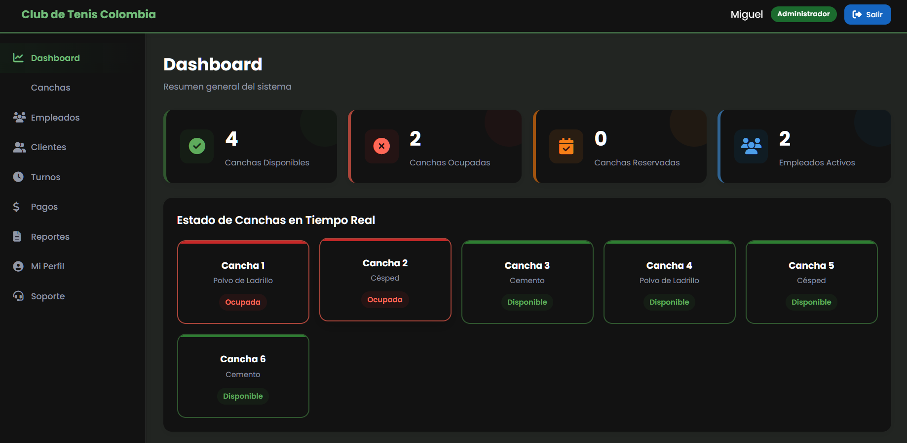
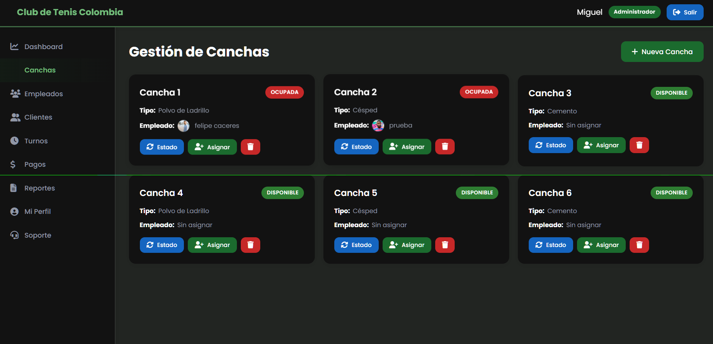
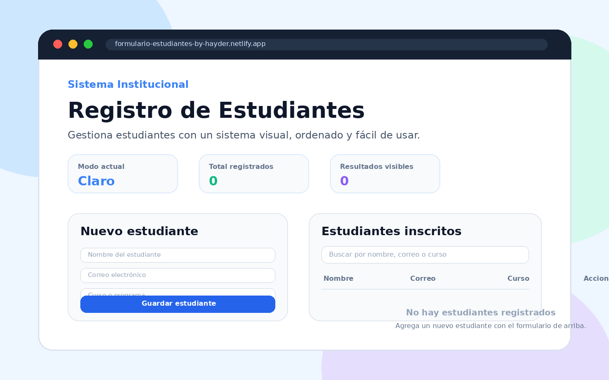
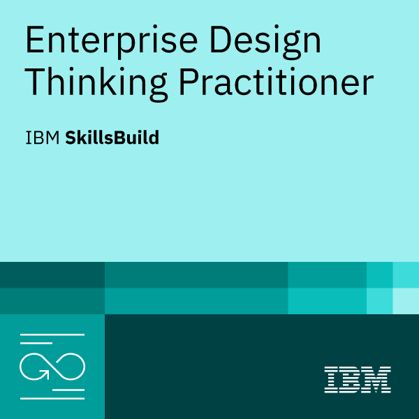

Portafolio profesional - Ingeniería de Software
Hayder Duvan
Carreño Ramos
Estudiante de Ingeniería de Software con interés en el desarrollo web, la creación de interfaces claras y la solución de problemas mediante tecnología.
Disponible para aprender, crear y mejorar soluciones web.
01 - Perfil
Perfil profesional
Soy estudiante de Ingeniería de Software y estoy construyendo una ruta profesional enfocada en el desarrollo de aplicaciones web, la organización del código y la creación de experiencias digitales fáciles de usar.
Me interesa participar en proyectos donde pueda aplicar HTML, CSS, JavaScript, buenas prácticas de diseño responsive y pensamiento centrado en el usuario.
Objetivo principal
Fortalecer mis competencias como desarrollador web y aportar soluciones funcionales, visuales y mantenibles.
Enfoque
Diseñar interfaces ordenadas, comprender necesidades del usuario y convertir ideas en prototipos funcionales.
Meta profesional
Avanzar hacia proyectos cada vez más completos, integrando frontend, bases de datos y lógica de negocio.
02 - Academia
Formación, certificaciones y competencias
Información académica y técnica que respalda mi proceso como estudiante de Ingeniería de Software.
Formación académica
Programa: Ingeniería de Software.
Perfil en formación orientado al desarrollo de soluciones web, análisis de requerimientos y construcción de aplicaciones interactivas.
Competencias técnicas
Lenguajes y tecnologías conocidos
JavaScript para interacción web, HTML y CSS para estructura y estilos, además de fundamentos de lógica de programación y manejo de proyectos con repositorios.
03 - Proyectos
Proyectos académicos y personales
Estos proyectos muestran mi práctica en interfaces web, gestión de información e interacción con usuarios.


Proyecto 1
Plataforma Caddies - Club de Tenis Colombia
Sistema web para apoyar la administración de un club de tenis: visualización de canchas disponibles u ocupadas, gestión de empleados, clientes, turnos, pagos y reportes administrativos.
HTML5CSS3JavaScriptGitHubResponsive
Ver repositorio

Proyecto 2
Registro de Estudiantes
Aplicación web para registrar, editar, eliminar y buscar estudiantes mediante una interfaz visual, ordenada y fácil de usar.
HTMLCSSJavaScriptFormulariosNetlify
Ver proyecto publicado
04 - Certificación
Enterprise Design Thinking Practitioner
Certificación de IBM SkillsBuild relacionada con pensamiento de diseño, trabajo centrado en las personas y solución creativa de problemas.
Abrir certificado PDF
IBM SkillsBuild
Enterprise Design Thinking Practitioner
Emitido: 01 mayo 202605 - Contacto
Hablemos de proyectos web
Estoy disponible para seguir aprendiendo, participar en trabajos académicos y construir soluciones digitales con buena organización.